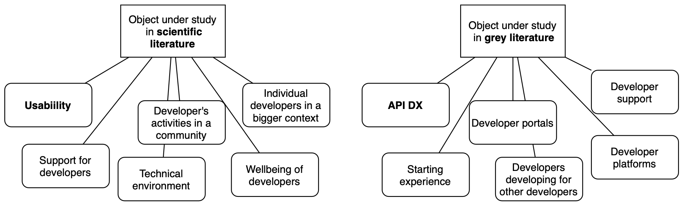
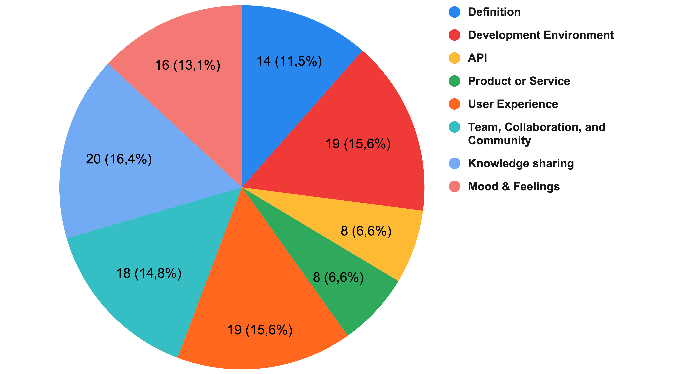

Multivocal literature review on developer experience
Anders Nylund
18.2.2020
Outline
- 1. Introduction
- 2. Background
- 3. Motivation
- 4. Study
- 5. Results
- 6. Discussion and conclusions
1. Introduction
"The conventions of the project were confusing and I didn't like to work on it"
"Setting up the development environment was simple and straightforward, and I got the app running in a few minutes"
2. Background
(Fagerholm, 2015)
Cognition - How do developers perceive the development infrastructure?
Affect - How do developer feel about their work?
Conation - How do developers see the value of their contribution?
(Fagerholm & Münch, 2013)
(Fagerholm, 2015)
3. Motivation
Currently,
definitions vary,
and there is a lack of a common understanding
in the literature of DX
4. Study
DX is still on a concept level ➡ multivocal literature review suitable research approach
Research problem
"What is the definition and aspects of Developer Experience, and how do they differ between scientific literature and literature written by practitioners?"Research question (1/5)
What objects and entities have been studied with respect to developer experience?Research question (2/5)
What methods have been used to study developer experience?Research question (3/5)
What is known about factors that improve or worsen developer experience?Research question (4/5)
From what contexts is developer experience looked at?Research question (5/5)
What are the definitions given to developer experience?
Number of sources in the multivocal literature review
Search strategy
Database search with author keyword "Developer Experience"
Backward and forwards snowballing
Analysis
Quantitative with help of data sheet
Qualitative analysis with help of KJ method i.e. affinity diagramming (Scupin, 1997)
5. Results
Object under study (RQ1)
Methods used in scientific literature (RQ2)
Methods used in grey literature (RQ2)
Factors that improve or worsen DX (RQ3)
Context of studies in scientific literature (RQ4)
Context of studies in grey literature (RQ4)
Categories of definitions (RQ5)
“Developer Experience (DX) is the equivalent of User Experience (UX) when it comes to a developer”
– Jarman (2017)
“... Developer Experience (DX) — which is all about using User Experience (UX) techniques to make life easier for third-party developers calling your public APIs ...”
– Lange (2016)
“DX design is about understanding the context of use, understanding what developers need to complete their tasks, underlying technology, integration points, and focusing on how developers feel while using a product or services.”
– Dhide (2017)
“Developer Experience relates to all kinds of artifacts and activities that a developer may encounter as part of his/her involvement in software development”
– Ekwoge et al. (2017) based on Fagerholm and Münch (2013)
6. Discussion and conclusions
In both scientific and grey literature
There has happened a change software engineering in the empathy and sympathy shown and expressed towards developers
➡ DX as a concept is a sign of humane and compassionate discussion
"Objectifying" of developers
"Inside-out" ➡ "outside-in" (Kauppinen et al., 2019)
Threats to validity of results
- Search strategy
- Using Google for grey literature
- Researcher bias
Thank you!
Sources
- Dhide, R. (2017). Building the developer experience (dx) from the ground up. Retrieved September 10, 2019, from https://blog.argoproj.io/building-the- developer-experience-dx-from-the-ground-up-8254d50457f5
- Ekwoge, O. M., Fontão, A., & Dias-Neto, A. C. (2017). Tester experience: Con- cept, issues and definition. In 2017 ieee 41st annual computer software and applications conference (compsac) (Vol. 1, pp. 208–213). IEEE.
- Fagerholm, F. (2015). Software developer experience: Case studies in lean-agile and open source environments (Doctoral dissertation, University of Helsinki). Retrieved from http://urn.fi/URN:ISBN:978-951-51-1747-2
- Fagerholm, F., & Münch, J. (2013). Developer experience: Concept and definition. CoRR, abs/1312.1452. arXiv: 1312.1452. Retrieved from http://arxiv.org/abs/1312.1452
- Jarman, S. (2017). The best practices for a great developer experience (dx). Retrieved September 10, 2019, from https://hackernoon.com/the-best-practices-for-a- great-developer-experience-dx-9036834382b0
- Kauppinen, M., Savolainen, J., Lehtola, L., Komssi, M., Tohonen, H., & Davis, A. (2009). From feature development to customer value creation. In 2009 17th ieee international requirements engineering conference (pp. 275–280). IEEE.
- Lange, K. (2016). 4 must-read articles on developer experience. Retrieved September 10, 2019, from https://www.kennethlange.com/4-must-read-articles-on- developer-experience-dx/
- Ozkaya, I. (2019). The voice of the developer. IEEE Software, 36(5), 3–5.
- Scupin, R. (1997). The kj method: A technique for analyzing data derived from japanese ethnology. Human organization, 233–237.